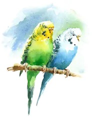
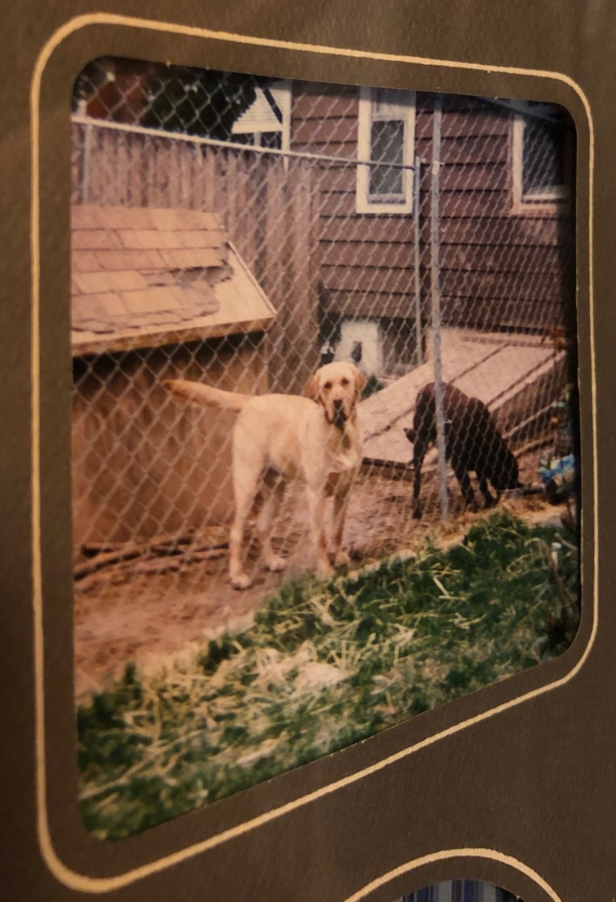
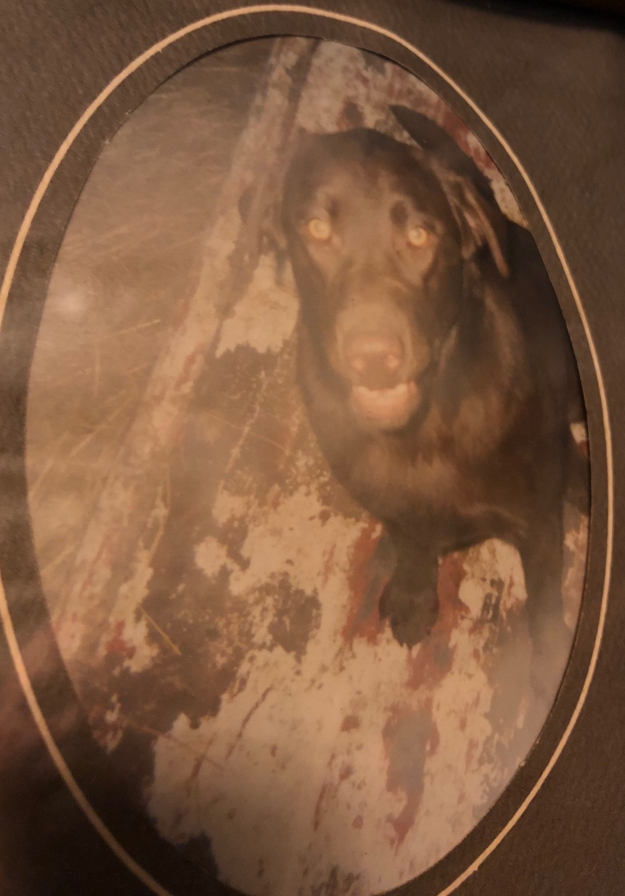
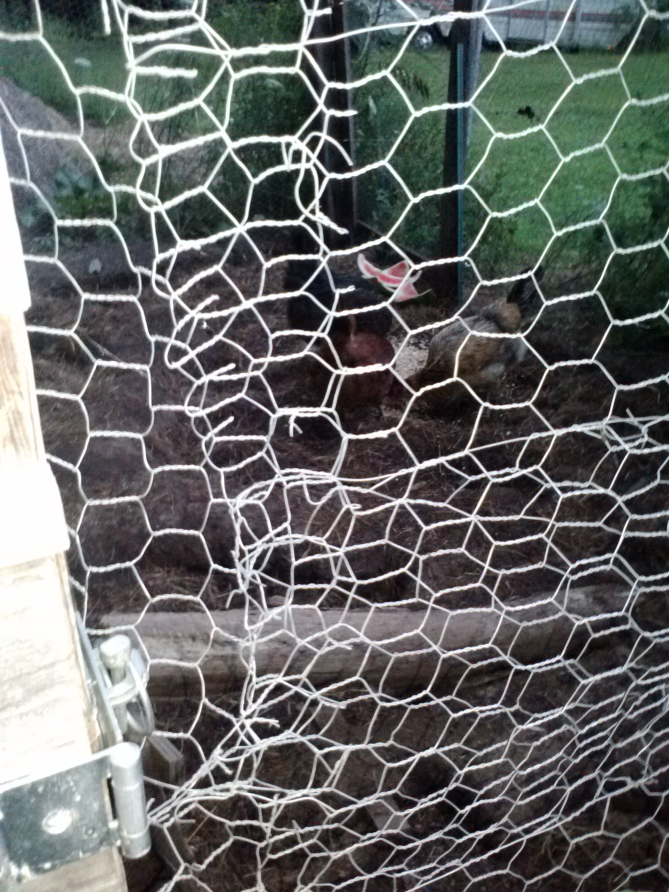
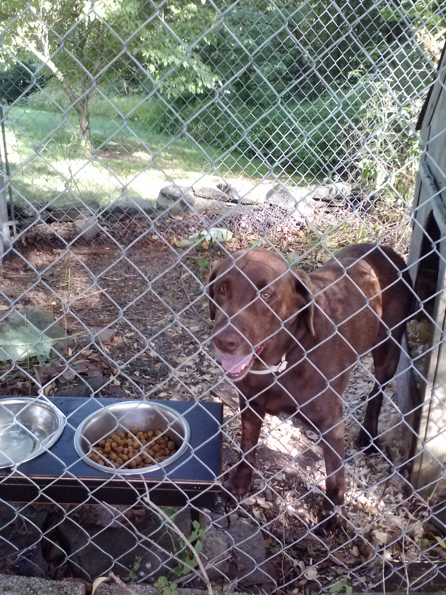
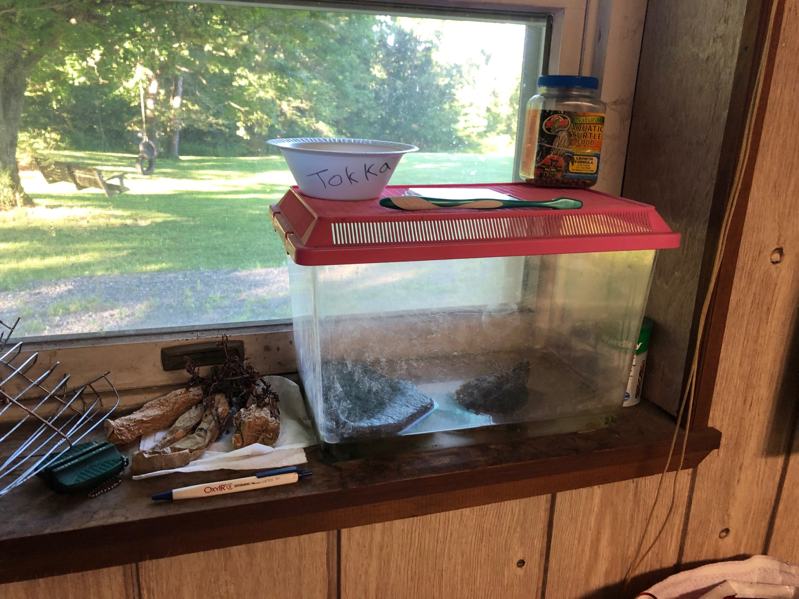

Mr. Floyd's Pets
I am an unabashed animal LOVER, and I respect all life immensely; (Yes, contrary to what some people think hunters can and usually are of this mindset). I have thus had several pets over the course of my life, and each one of these furry/scaly/feathered little beasts has acted to bring A LOT of positivity into my life!
Chuckie and Chi-Chi
If I recall correctly, the first two pets I ever had were these two parakeets named "Chuckie and Chi-Chi". One was blue, and one was green (I forget which was which). How my family got these birds is a bit of a story, since I am pretty sure my father just brought these two birds home one day and gave them to my mother to take care of. I was probably around 3 years old when we got these, so I do not remember that much about them, but I do recall looking at them in their cage located in our basement quite often with wonderment. Thinking back to this as an adult always makes me say to myself "Huh...so we totally had birds...why again did we have them?", while also making sure to note that this is a classic example of a "pocket-in-time" event!
Cutter and Cheyenne
The next main pets that we had were Cutter and Cheyenne. Cutter was a yellow lab, and Cheyenne was a chocolate lab. They were brother and sister, and we acquired them from a family in Lancaster. I remember meeting two members of this family's children, since they were the same age as myself and my sister, and finding it awesome when they said that their names were "Boy-ie" and "Girl-ie". Boyie and Girle were super nice though, and they gave my sister and I a purple and orange stuffed bunny (two items that were lost due to terrible inaction on my part, but this is a story for another day...). Any who, aside from briefly having a black lab named "Blackie" before I was born, Cutter and Cheyenne were my family's first real dogs. We absolutely loved and adored them from day one. Cutter was a bit of a chunker, but he was so nice and friendly. Cheyenne was much slimmer and fast like lightning, and while she could be a bit sneaky she made up for it with all of the love she'd give!
 

William
Cutter lived until he was 10 years old, leaving us just with Cheyenne for a few years. It was so, so sad when we had to put Cutter to rest. This was another "pocket-in-time" day, but one far more sad. My sister encouraged us to get another pet though, specifically a cat, to keep Cheyenne company. We henceforth adopted this little farm kitten from Bradford County, originally naming the little orange and white mush-ball "Cyber" to keep our trend of "C" names going. I thought that he looked more like a "William" though, so before long we all started calling him that. Will was a bit of a meanie at first though, since he would often jump on Cheyenne (who now possessed the nickname "Cjoe", pronounced "Jo", due to my desire for all of our pets to have common human names) and scratch her. Will and Cheyenne lived together for about three or so years, with the latter showing the former the ropes. William eventually calmed down and the pair became good friends due to all of their time spent together. Cheyenne would eventually pass on though at age 13, on a warm Summer day in my arms, after she started convulsing the prior night. This was another very, very sad moment...one that I will never forget...

The Chickens
William remained our only pet for many years following Cheyenne's passing, and he slowly but surely became a fixture in our home. He was always fun to play with, a decent snuggler for a cat, but not afraid to claw you up if he felt like it. The more pets the better though, so one day my father went and got 8 fertilized chicken eggs from Tractor Supply in order to "hatch" some new animal friends. A few days after putting the eggs under a heat lamp to incubate, they finally hatched. Eight little baby chicks! My father also built a really nice coop for all of them, so once they were big enough that is where they were to live. Only 7 of the 8 survived long enough for the big transfer though, but these 7 managed to live for many years in that pen. We had eggs out the WAH-ZOO during these years, and the daily routine of feeding, egg collecting, and "walking" the chickens became quite enjoyable. One day though some predatory animal, likely one of the foxes we'd see running around, got in the coop and took out one of our chickens. Despite good efforts, over the next couple of years more predators would sneak in from time to time, and one by one our chickens fell prey to these wild beasts...
Hooper
Prior to all of the chickens passing on, my father began wanting to get another dog. One day a friend of his told him about this 8 year old chocolate lab that his neighbors had to get rid of since their new child had a severe allergy to pets. This seemed like the perfect opportunity to get another dog, so we did! We thus adopted "Hooper", and man oh man was he cool. Hooper came to us in fantastic physical shape. He was like the "Frank Zane" of chocolate labs in that he was very muscular, toned, and in great shape. He could also run and jump like a deer, and he had the appetitie of a top-notch athlete. Hooper had a very unique personality as well, often avoiding eye-contact and displaying some interesting behaviors and bouts of anxiety. He was a great friend to have around though, and I have some great memories hanging out with him during my "dead-legs" era (another story for another day!). Hooper lived with us for almost 3 and a half years, eventually passing away at the age of 11. This was again one of the saddest days, but the positivity he brought made everyone a better person so it was well worth having him!

Tokka
All of the pets I have had have lived alongside at least one pet that I already had, allowing for a great amount of continuity among my pets. Similar to how older presidents attend a new president's inauguration, this trend was almost broken during Hooper's last few months. Fortunately it was not though, for one day my father gave me a present in the form of a baby-snapping turtle he had found while fishing. At first I was a bit unsure as to what to do with my newfound "shellular" friend. Growing up my sister and I caught and "housed" many insects, frogs, salamanders, newts, and turtles in our little outside terrarium sets, but never did we actually keep one as a true pet. Tokka would break that trend though...


I originally just kept Tokka in a large plastic bin outside, but he would earn a spot inside the house in short order. You see, Tokka was the reason that I got my first real teaching job. A position had opened up at one of the finest schools in the area for a year-long Science LTS, and after applying for it and attending the first interview I had done well enough to be asked to come back for a 2nd interview. This 2nd interview would require that I do a "demo lesson" in front of a real class of students though. I had done a couple of these before, but I knew that if I wanted the job I just had to WOW them. I had to make a lesson about "Cell Theory" though, and this made me spend many nights tossing and turning over how to make this "cool" to learn....

One day while going on my morning run, it finally hit me. There are 3 parts of Cell Theory (1. All living things are made of cells. 2. All living cells arise from pre-existing cells by division. 3. The cell is the fundamental unit of structure and function in all living organisms.), that link all life. No matter how unique and different living things may appear to be, EVERY SINGLE ONE has these things in common. I had turtles on my brain due to recently getting Tokka, and as I ran by and passed Tokka in his outdoor bin the idea of Cell Theory began to mesh with turtles in my mind more and more since turtles can so totally be a lot different (See: Land Turtles, Tortoise, Terrapin, Soft-Shell, Sea-Turtle, etc.) but still all linked by having several related features (Shells, tails, four limbs, etc.). "Turtle Theory" was thus born, a lesson involving the use of many turles (even a REAL one, TOKKA), and right then and there I knew that if I did this lesson the job was mine...

After revising my idea some more into lesson format I went in for the interview with nothing more than some papers, a box full of turtle toys, and an even bigger box with something scratching around inside. I remember vividly how the ladies in the office kept looking over at me, but at this point I knew there was no turning back. I stood up with pride, went into that classroom, and just rocked it. The students literally clapped after I was done, and when the vice principal told me as I left "They don't usually clap for people...that's a good sign Mr. Floyd..." I felt so good inside. Not because I thought I would get the job, which I fortunately did, but because I kept to my principals and made a lesson that was totally from the heart. It was zany, out of the ordinary, and risky, but more importantly than that it was definitely "Chase Floyd". I refused to conform to the mold of what a teacher was "supposed to be", and because of that I succeeded that day. This was a big moment in my life, and it never would have happened if it wasn't for that little baby snapping turtle!

Tokka now lives proudly in my house, in a little "house" of his own. He loves his rock and his weekly baths, and he is forever ore a pet that I am eternally grateful to!
George
After Hooper passed it was just Tokka and William for awhile, but dogs leave a void that can only be filled with more dog. One day while browsing the web we came across "Jorge", a yellow-lab mastiff mix from Tennesee. Jorge was living in a rescue shelter, and he had a very kind looking face( one that looked like he needed a home!). We thus adopted Jorge, Americanizing the spelling of his name to George, and from the moment he arrived he began spreading positivity everywhere he went. George is probably the friendlist dog I have ever been around in that he is probably too friendly. He has been "picked up" by strangers twice now, he often runs over to the neighbors to "hang", and he does not seem to differentiate strangers from owners. He's as nice as can be though, and he is just a blast to have around. I love playing catch with him and doing "air hugs", something that I am actually going to go do on this great Augusut day once I finish writing this page!